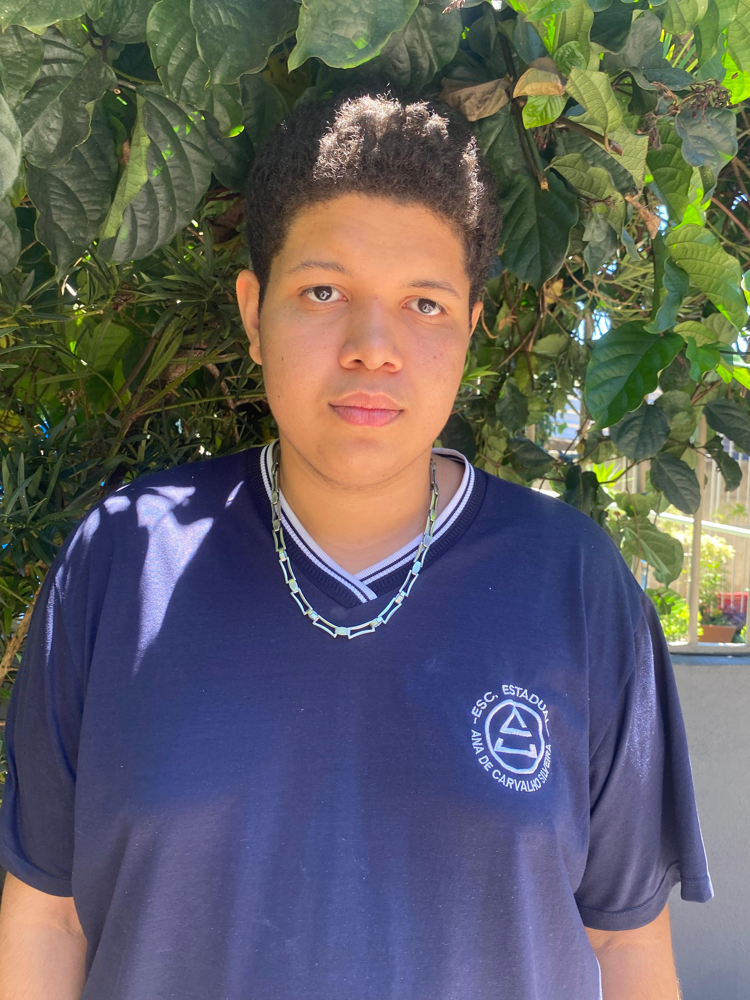

No curso de informática, Thiago Alves aprendeu muito sobre tecnologia, mas principalmente sobre trabalho em equipe e companheirismo. A maior dificuldade que ele teve foi em copiar e, principalmente, com Arduino. Já sua maior facilidade foi com arquitetura e manutenção de computadores, área na qual já possuía uma boa noção. Thiago destaca que gosta muito da forma como o professor André ensina sobre a arquitetura dos computadores e os cuidados necessários com as peças. Esse curso influenciou e continua influenciando fortemente a vida profissional de Thiago, pois ele entende que o mundo atual está cada vez mais tecnológico e que a informática se tornou algo essencial. Por isso, ele valoriza muito a oportunidade de fazer um curso técnico, aproveitando ao máximo, sabendo que isso será de grande ajuda para o seu futuro profissional. Thiago pretende seguir na área da informática, especialmente no setor de manutenção de computadores. Um dos melhores momentos do curso, segundo ele, foi quando descobriu que não precisava fazer tudo sozinho e que era capaz de realizar coisas que nunca tinha imaginado antes. O que mais o orgulha em ter aprendido foi o companheirismo, pois sempre teve dificuldade em trabalhar em grupo, mas percebeu que isso é extremamente necessário e importante. Thiago acredita que entender a tecnologia é fundamental, já que o mundo está em constante evolução e cada vez mais tecnológico e virtual. Ele não teve medo de não acompanhar o ritmo, pois aprende rápido, embora admita que nem sempre gosta de executar as tarefas. O conselho que Thiago deixaria para os próximos alunos seria, Se esforce e aproveite cada momento, pois só tentando é que se aprende e evolui.